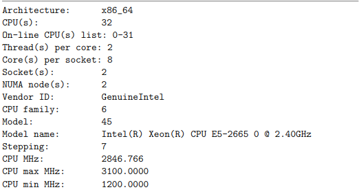
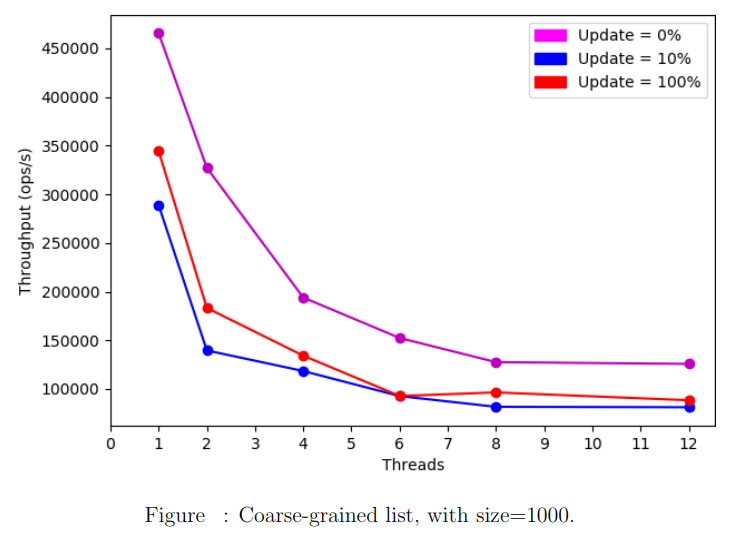
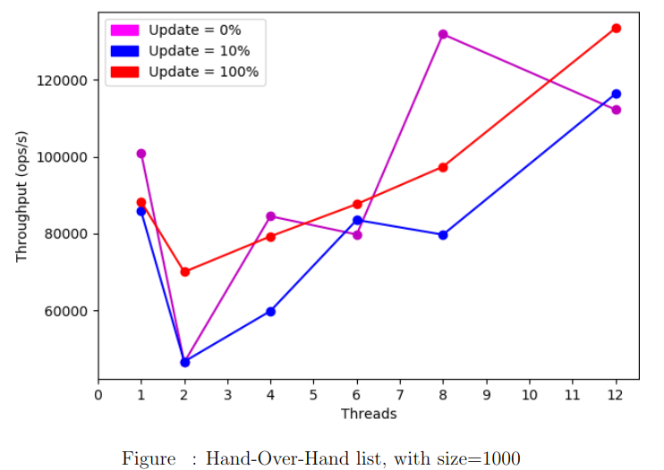
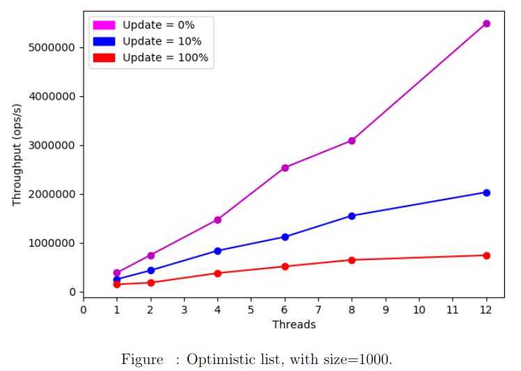
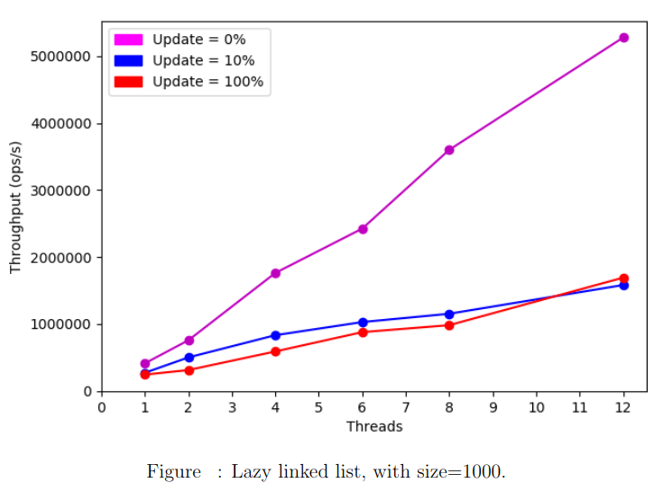
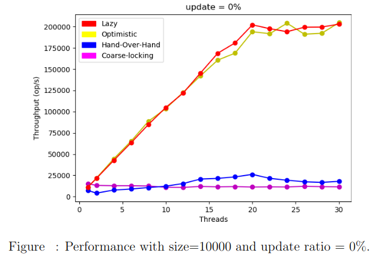
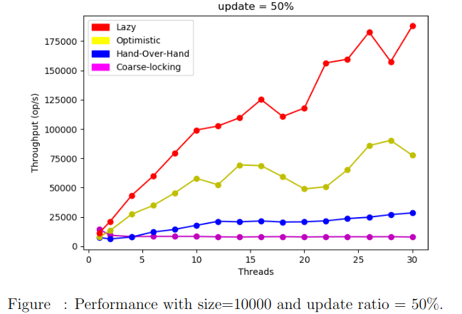
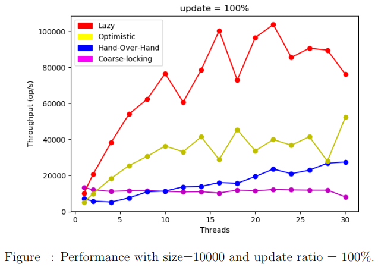

Introduction
Concurrent data structures if implemented carefully can lead to a huge increases in performance.
In this post, we’ll try to show that with fancy plots!
We will implement and run benchmarks on different lock-based algorithms. Our running example is a sorted linked list used to implement a Set abstraction where allowed operations are :
- boolean insert (Object item) : adds an item to the Set and returns true if successfully added or false if the item already exists.
- boolean remove (Object item) : removes an item from the Set and returns true if successfully removed or false if the item doesn’t exist.
- boolean contains (Object item) : returns true if the item exists, false otherwise.
Note that all items should be comparable (i.e there is a total order on the set of all items), otherwise sorting has no meaning.
System details
All the benchmark tests were done in a machine with the following caracteristics. (Huge machine indeed!) 
Algorithms overview
- Coarse-grained : each time a thread wants to do some operation on the Set it locks the entire list. (cf. code )
- Hand-Over-Hand : Instead of locking the entire set, when a thread traverses the list, it locks each node when it first visits it, and sometime later releases the lock when leaving it. This algorithm ensures that multiple threads can access multiple nodes in the list at the same time. (cf. code )
- Optimistic List : In order to reduce synchronization costs, the optimistic approach suggests that we search without acquiring locks. When the nodes are found, we lock them, and then confirm that they are correct, through a validation process. If a synchronization conflict causes the wrong nodes to be locked, we release the locks and restart over again. (cf. code )
- Lazy Linked List : The validation does not retraverse the entire list. Instead, it checks that the pred and the curr nodes are not marked as deleted and that the pred is still pointing to the curr. (cf. code )
In order to test the efficiency of these algorithms, we run them through a serie of tests and depict the throughput as a function of the number of threads varying the update ratio.
For the next analysis, we’ll run the 4 algorithms on a linked-list with size= 1000 and check the results for update ratios 0%, 10% and 100%. The duration of the benchmark is set to 2 seconds.
Coarse-grained
We notice a decreasing curve. As we increase the number of threads the coarse-grained locking algorithms’ throughput decreases. For all update ratios, we get the highest performance when there is one unique thread.

Hand-Over-Hand
We notice that when the number of threads is low, the Hand-Over-Hand locking algorithm behaves worse than the Coarse-grained algorithm. This is mainly due to the fact that locking and unlocking each node in a ”Hand-Over-Hand” manner can be costly. However, as we increase the number of threads its performance starts to get slightly better :

Optimistic List
As we increase the number of threads, we notice a huge increase of performance for the Optimistic List with wait-free traversal especially when there are no updates. However, as we increase the update ratio, the optimistic algorithm’s performance starts to decrease.

Lazy List
To improve the performance of the optimistic algorithm, we add to each node a Boolean marked field indicating whether that node is in the set or not. The validation does not retraverse the entire list. Instead, it checks that the pred and the curr nodes are not marked as deleted and that the pred is still pointing to the curr. Avoiding the retraversal for validation leads to an improvement in performance as the following plot shows.

Performance comparison
We run the benchmark test on a list with size=10000 varying the update ratios.   
Conclusion
In practice, the lazy lock-based algorithm outperforms all the 3 others. This is basically due to the fact that the lazy approach does not require traversals to check up logically removed nodes. Validation is done in O(1).
On the other hand, the lazy lock-based list does not guarantee progress in the face of arbitrary delays. Its principal disadvantage is that its methods add() and remove() are blocking which is not the case for Lock-Free lists.
BONUS : Amdahl’s law
Amdahl’s law is often used in parallel computing to predict the theoretical speedup when using multiple processors.
For example, if a program needs 20 hours using a single processor core, and a particular part of the program which takes one hour to execute cannot be parallelized, while the remaining 19 hours of execution time can be parallelized, then regardless of how many processors are devoted to a parallelized execution of this program, the minimum execution time cannot be less than that critical one hour.
 In fact parallel computing with many processors is useful only for highly parallelizable programs.
In fact parallel computing with many processors is useful only for highly parallelizable programs.
For more information check out Adamhl’s law.
Reference
- M. Herlihy, N. Shavit. The Art of Multiprocessor Programming. 2008.